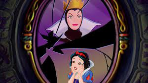
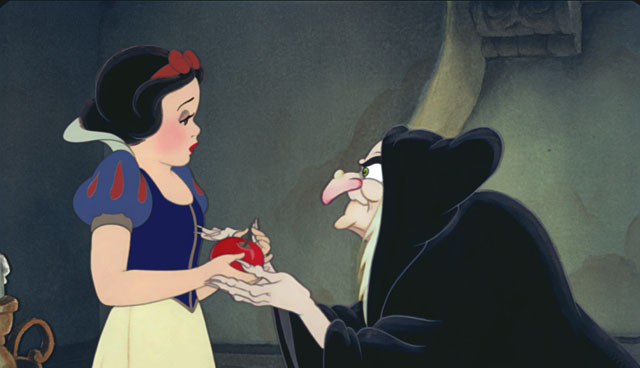

En un lugar muy lejano vivía una hermosa princesa que se llamaba Blancanieves. Vivía en un
castillo con su madrastra, una mujer muy mala y vanidosa, que lo único que quería era ser la mujer más
hermosa del reino. Todos los días preguntaba a su espejo mágico quién era la más bella del reino, al que el
espejo contestaba:
- Tú eres la más hermosa de todas las mujeres, reina mía. El tiempo fue pasando hasta que un día el espejo
mágico contestó que la más bella del reino era Blancanieves. La reina, llena de furia y de rabia, ordenó a
un cazador que llevase a Blancanieves al bosque y que la matara. Y como prueba traería su corazón en un
cofre. El cazador llevó a Blancanieves al bosque pero cuando allí llegaron él sintió lástima de la joven y
le aconsejó que se marchara para muy lejos del castillo, llevando en el cofre el corazón de un jabalí.
Capitulo 2
Blancanieves, al verse sola, sintió mucho miedo porque tuvo que pasar la noche andando por la
oscuridad del bosque. Al amanecer, descubrió una preciosa casita. Entró sin pensarlo dos veces. Los muebles y
objetos de la casita eran pequeñísimos. Había siete platitos en la mesa, siete vasitos, y siete camitas en la
alcoba, dónde Blancanieves, después de juntarlas, se acostó quedando profundamente dormida durante todo el
día.
Al atardecer, llegaron los dueños de la casa. Eran siete enanitos que trabajaban en unas minas. Se quedaron
admirados al descubrir a Blancanieves. Ella les contó toda su triste historia y los enanitos la abrazaron y
suplicaron a la niña que se quedase con ellos. Blancanieves aceptó y se quedó a vivir con ellos. Eran felices.
Capitulo 3

Mientras tanto, en el castillo, la reina se puso otra vez muy furiosa al descubrir, a través de su
espejo mágico, que Blancanieves todavía vivía y que aún era la más bella del reino. Furiosa y vengativa, la
cruel madrastra se disfrazó de una inocente viejecita y partió hacia la casita del bosque.
Allí, cuando Blancanieves estaba sola, la malvada se acercó y haciéndose pasar por buena ofreció a la niña una
manzana envenenada. Cuando Blancanieves dio el primer bocado, cayó desmayada, para felicidad de la reina mala.
Por la tarde, cuando los enanitos volvieron del trabajo, encontraron a Blancanieves tendida en el suelo,
pálida y quieta, y creyeron que estaba muerta.
Capitulo 4
Tristes, los enanitos construyeron una urna de cristal para que todos los animalitos del bosque pudiesen
despedirse de Blancanieves. Unos días después, apareció por allí un príncipe a lomos de un caballo. Y nada más
contemplar a Blancanieves, quedó prendado de ella.
Al despedirse besándola en la mejilla, Blancanieves volvió a la vida, pues el beso de amor que le había dado
el príncipe rompió el hechizo de la malvada reina. Blancanieves se casó con el príncipe y expulsaron a la
cruel reina del palacio, y desde entonces todos pudieron vivir felices.
FIN